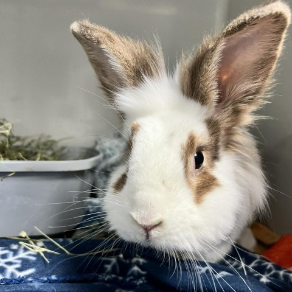

Peanut
Peanut is a english spot mix adult rabbit with a medium built.His vaccinations are up to date,and he has been spayed /neutered.
About Peanut
Peanut was caught outside near an old shelter with another bunny. Both were adopted separately. Peanut was surrendered back in Sept '24 when his family got a second bun and he became aggressive towards the new bun. This is why using our bonding services is helpful! Bonding bunnies is NOT easy! Personality: Cute ball of fluff.